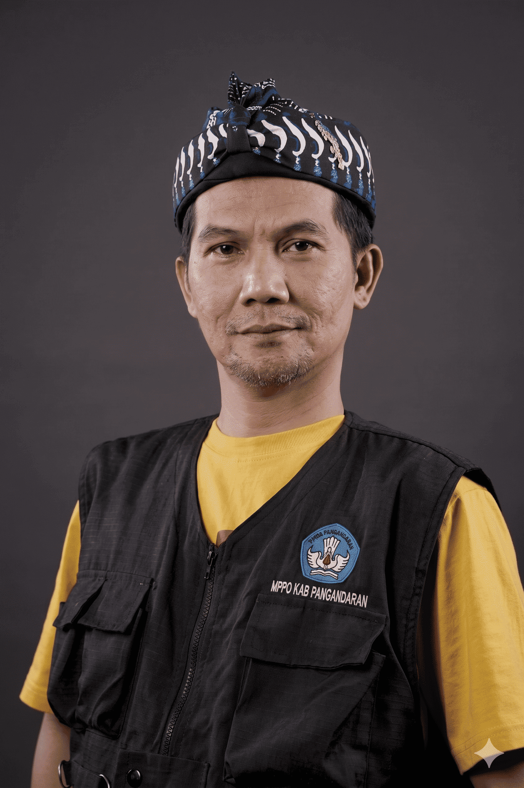
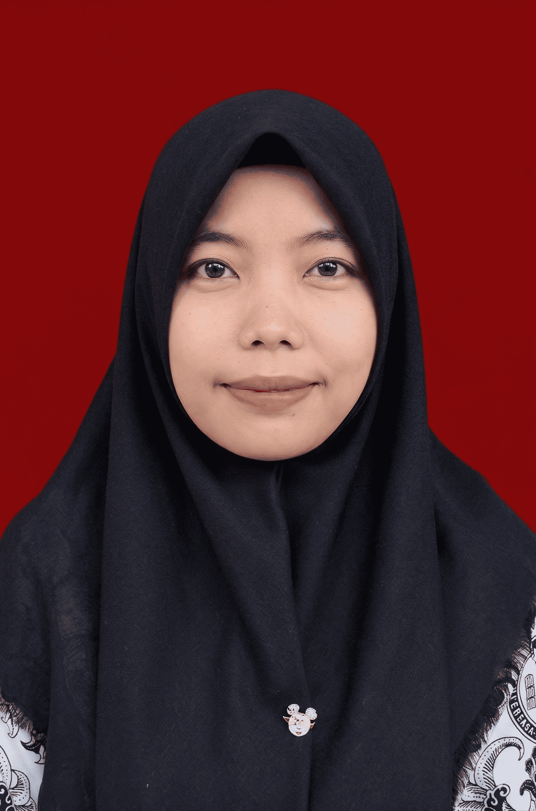
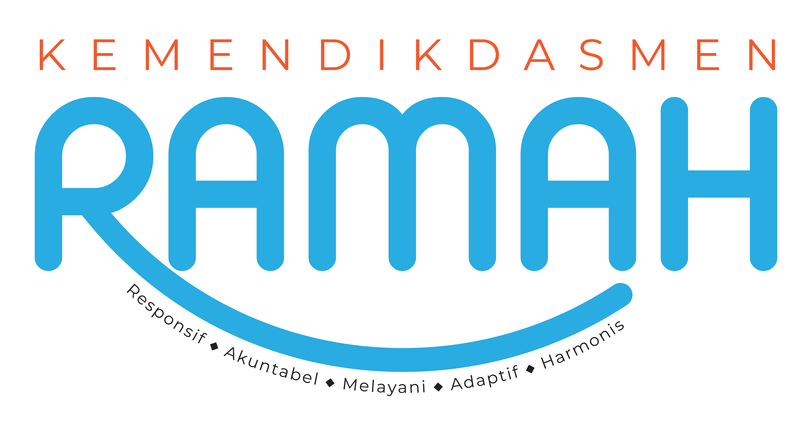
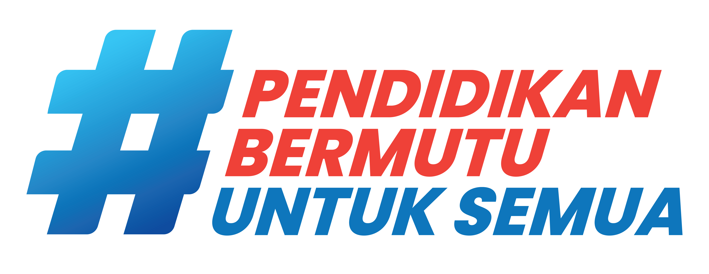

Pembelajaran Seni Rupa
Eksplorasi Seni Lukis
Eksplorasi elemen visual, ragam aliran lukisan, dan ruang ekspresi digital dalam satu buku interaktif.
Inspirasi Seni
Kanvas Kosong Menantimu... ✨
Seni lukis modern adalah bahasa bagi perasaan yang tidak bisa diucapkan dengan kata-kata. Melalui garis, bentuk, dan warna, para seniman modern menciptakan dunia mereka sendiri.
Di media pembelajaran ini, kamu tidak hanya akan belajar tentang sejarah, tapi juga diajak untuk melihat dunia dari sudut pandang yang benar-benar baru. Mari mulai perjalanan kreatifmu hari ini.
Tujuan Pembelajaran
- Siswa mampu memahami konsep & tujuan seni lukis.
- Siswa mampu mengenali 5 aliran seni lukis modern (Realisme, Impresionisme, dll).
- Siswa mampu menganalisis karya lukis pada galeri virtual.
Petunjuk Penggunaan
- Bacalah setiap bagian materi dengan teliti.
- Ikuti aktivitas interaktif seperti klik pilihan, pertanyaan singkat dan fitur studio.
- Kerjakan Latihan soal untuk melihat sejauh mana kalian telah memahami materi yang telah dipelajari.
- Gunakan Materi ini untuk belajar bernalar kritis, kolaborasi, dan komunikasi antar murid.
- Klik tombol Beranda untuk kembali ke menu utama.
- Klik tombol Selanjutnya untuk maju dan Sebelumnya untuk kembali.
Menu Pembelajaran
Pilih modul yang ingin kamu pelajari hari ini.
Materi Interaktif
Eksplorasi elemen dan fungsi seni rupa.
Lab Warna
Eksperimen campuran warna primer.
Museum Digital
Jelajahi 5 aliran seni lukis ternama.
Latihan Cocokkan
Uji aliran seni dengan fitur Drag & Drop.
Evaluasi Akhir
Uji pemahamanmu dengan kuis gamifikasi.
Studio Berekspresi
Buat karya seni rupa digitalmu sendiri.
Glosarium
Kamus istilah seni rupa.
Referensi
Daftar pustaka & sumber media.
Tim Pengembang
Kreator media pembelajaran.
Definisi Seni Lukis
Selamat Datang di Dunia Seni Lukis
Di halaman ini kalian akan mempelajari salah satu cabang dari seni rupa yang berfokus pada kegiatan melukis.
Melukis merupakan kegiatan mengolah medium dua dimensi atau permukaan dari objek tiga dimensi untuk mendapat kesan tertentu. Untuk memahami seni lukis secara utuh, kita perlu melihat fungsi-fungsinya sekaligus alasan psikologis dan historis mengapa manusia terus melakukannya.
apakah kalian sudah siap? Ayo Kita Mulai.
Dengarkan Narasi
Fungsi Seni Lukis
Secara umum, seni lukis memiliki beberapa fungsi utama dalam kehidupan manusia, Klik fungsi di bawah ini untuk melihat contoh visualnya.
Fungsi Ekspresi
Fungsi ekspresi adalah fungsi seni lukis sebagai media untuk mengungkapkan perasaan, pikiran, pengalaman, imajinasi, dan emosi seorang seniman.
Klik untuk Info
Fungsi Komunikasi
Fungsi komunikasi adalah fungsi seni lukis sebagai media untuk menyampaikan pesan atau cerita kepada penonton.
Klik untuk Info
Fungsi Religius
Fungsi religius adalah fungsi seni lukis yang bertujuan untuk memperkuat kepercayaan spiritual, melalui ritual, atau ekspresi keagamaan.
Klik untuk Info
Fungsi Estetis
Fungsi estetik adalah fungsi seni lukis sebagai media untuk menciptakan dan menampilkan keindahan.
Klik untuk Info
Elemen Dasar Seni Rupa
Unsur visual pembentuk seni. Klik pada masing-masing elemen untuk detail dan video pembelajaran.
Garis
Titik-titik yang menyatu dan memanjang. Memiliki sifat lurus, lengkung, patah-patah.
Bidang & Bentuk
Area datar (2D) yang dibatasi oleh garis. Bila memiliki volume, disebut Bentuk (3D).
Warna
Kesan dari cahaya pada mata. Terdiri dari primer, sekunder, dan tersier. (Klik untuk Video)
Tekstur
Sifat permukaan suatu benda (kasar, halus, licin). Bisa berupa tekstur nyata atau semu.
Gelap Terang
Intensitas cahaya pada objek yang memberikan kesan kedalaman (volume).
Ruang
Ilusi kedalaman atau dimensi pada bidang 2D, yang sering diciptakan menggunakan teknik perspektif.
Membangun Lukisan Abstrak
Nyalakan sakelar di bawah untuk melihat bagaimana seniman beraliran De Stijl (seperti Piet Mondrian) menyusun elemen Garis, Bidang, dan Warna menjadi sebuah mahakarya.
Lab Eksperimen Warna
Tantangan 1/3: Buatlah warna di bawah ini!
Latihan: Cocokkan Aliran
Ketuk/Pilih lukisan di bawah, lalu ketuk kotak aliran seni yang tepat!
Lorong Waktu Aliran Seni
Pilih pintu ruang pameran untuk menjelajahi berbagai mahakarya.
Definisi & Sejarah
Realisme adalah aliran seni yang mengangkat peristiwa keseharian yang dialami oleh orang kebanyakan, persis seperti apa adanya, tanpa didramatisir atau diperindah. Aliran ini lahir di Prancis pada pertengahan abad ke-19.
Galeri Foto Masterpiece
Video Penjelasan Realisme
Materi Seni Rupa aliran dan gaya dalam seni lukis, dikemas khusus untuk siswa SMP.
Tokoh Pelukis
- Dunia: Gustave Courbet, Jean-François Millet, Edouard Manet.
- Indonesia: Raden Saleh, S. Sudjojono.
Emosi di Atas Kanvas
Ekspresionisme adalah aliran seni lukis yang mengutamakan kebebasan dalam bentuk dan warna untuk mencurahkan emosi atau perasaan terdalam pelukisnya. Di sini, kenyataan objek tidak terlalu penting, yang terpenting adalah *bagaimana perasaan pelukis* saat melihat objek tersebut. Bentuk bisa didistorsi (diubah) dan warna bisa sangat mencolok.
Ciri Khas
- Goresan kuas yang spontan, cepat, dan tegas.
- Warna sering kali berani dan tidak natural.
- Bentuk objek mengalami distorsi (dilebih-lebihkan).
Galeri Foto Masterpiece
Video Penjelasan Ekspresionisme
Mengenal lebih dekat aliran seni rupa Ekspresionisme dan ciri khasnya.
Tokoh Pelukis
- Dunia: Edvard Munch, Vincent van Gogh, Ernst Ludwig Kirchner.
- Indonesia: Affandi.
Menangkap Kesan Cahaya
Aliran lukisan ini berfokus pada kesan sekilas yang ditangkap oleh mata akibat pantulan cahaya pada sebuah objek. Para pelukis impresionis biasanya melukis di luar ruangan (en plein air) dengan sangat cepat sebelum cahaya matahari berubah arah. Objek tidak memiliki garis tepi (kontur) yang tegas.
Galeri Foto Masterpiece
Video Penjelasan Impresionisme
Saksikan gaya melukis cepat Claude Monet dalam menangkap cahaya matahari.
Tokoh Pelukis
- Dunia: Claude Monet, Edgar Degas, Pierre-Auguste Renoir, Camille Pissarro.
Definisi & Sejarah
Kubisme merupakan aliran seni rupa yang menampilkan objek dalam bentuk-bentuk geometris seperti kubus, segitiga, silinder, atau lingkaran. Aliran ini memecah objek dan menyusunnya kembali dari berbagai sudut pandang dalam satu kanvas yang sama (multi-perspektif). Dipelopori oleh seniman legendaris Pablo Picasso dan Georges Braque.
Galeri Foto Masterpiece

Video Penjelasan Kubisme
Penjelasan singkat tentang apa itu aliran seni Kubisme.
Tokoh Pelukis
- Dunia: Pablo Picasso, Georges Braque, Juan Gris.
Definisi & Sejarah
Seni Abstrak adalah seni yang sama sekali tidak meniru bentuk nyata yang ada di alam (non-representasional). Seniman abstrak berkomunikasi murni melalui penyusunan elemen dasar seperti garis, warna, dan bidang ruang. Wassily Kandinsky (bapak seni abstrak) percaya bahwa lukisan abstrak dapat dinikmati seperti mendengarkan musik — tanpa bentuk nyata, namun bisa membangkitkan rasa.
Galeri Foto Masterpiece
Video Penjelasan Abstraksionisme
Penjelasan singkat tentang apa itu lukisan abstrak.
Tokoh Pelukis
- Dunia: Wassily Kandinsky, Piet Mondrian, Jackson Pollock.
- Indonesia: Ahmad Sadali, Fajar Sidik.
Uji Pemahamanmu!
Kamu telah menjelajahi materi dan galeri museum. Sekarang, saatnya menguji ingatan dan pemahamanmu melalui tantangan interaktif ini. Dapatkan skor minimal 80 untuk membuka Sertifikat Digital!
Pertanyaan akan muncul di sini...
Studio Ekspresi Digital
Mini Challenge: Terapkan pengetahuanmu! Gunakan alat di bawah ini untuk menggambar pemandangan alam sederhana menggunakan prinsip aliran Realisme (mendekati wujud nyata).
Jurnal Refleksi
Bagus sekali! Kamu telah melewati berbagai materi, latihan, hingga berekspresi. Mari sejenak merenungkan apa yang sudah kamu pelajari. Jawabanmu akan tersimpan secara otomatis di dalam browser (Local Storage).
Glosarium (Kamus Seni)
Temukan arti dari istilah-istilah seni rupa yang mungkin baru kamu dengar di bawah ini. Ketik pada kolom pencarian untuk menyaring kata dengan cepat.
Abstraksionisme
Aliran seni yang tidak menggunakan bentuk nyata atau objektif, melainkan mengandalkan warna, garis, dan bentuk dasar.
Ekspresionisme
Aliran seni yang lebih menonjolkan ekspresi perasaan batin seniman daripada meniru bentuk alam secara akurat.
Impresionisme
Aliran seni yang menangkap kesan sesaat dari sebuah objek, biasanya fokus pada pencahayaan dan warna yang berubah-ubah.
Komposisi
Penataan atau penyusunan elemen-elemen seni (garis, warna, bentuk) dalam sebuah karya agar terlihat harmonis dan seimbang.
Kubisme
Aliran seni yang memecah objek ke dalam bentuk-bentuk geometris seperti kubus, silinder, atau kerucut.
Palet
Papan atau permukaan datar yang digunakan pelukis untuk mencampur cat. Juga merujuk pada rentang warna yang digunakan dalam sebuah lukisan.
Realisme
Aliran seni yang berusaha menggambarkan objek atau kehidupan nyata sehari-hari seakurat dan seobjektif mungkin tanpa dilebih-lebihkan.
Daftar Referensi
Pustaka & Materi
- kementerian Pendidikan dan Kebudayaan (2018). Seni budaya SMP/MTS kelas IX. Jakarta: Jakarta: Kementerian Pendidikan dan Kebudayaan.
- Kementerian Pendidikan, Kebudayaan, Riset, dan Teknologi (2022). Buku Panduan Guru Seni Rupa Kurikulum Merdeka Fase D. Jakarta: Pusat Perbukuan. Badan Standar, Kurikulum dan Asesmen Pendidikan.
- Capaian Pembelajaran Kurikulum Merdeka Fase D Mata Pelajaran Seni Rupa.
- Wikipedia (diakses tanggal 5 - 30 Juli 2026,).
Sumber Media (Gambar, Video & Ilustrasi)
- Wikimedia Commons (Public Domain / CC-BY-SA) untuk karya Van Gogh, Picasso, Raden Saleh, dll.
- Freepik & Unsplash (Lisensi Bebas / Edukasi) diakses 5 - 30 Juli 2026.
- suara, Ilustrasi vektor dan ikon dari Freepik, fixabay, mixkit, Flaticon, dan Pixel Perfect (Lisensi Edukasi). diakses 5 - 30 Juli 2026
- aplikasi canvas diakses 5 - 30 Juli 2026.
- Gemini AI diakses 5 - 30 Juli 2026.
- aplikasi claude.AI diakses 5 - 30 Juli 2026.
- Aset grafis Direktorat SMP Kemendikdasmen.
PENANGGUNG JAWAB
Direktorat SMP
Tata Kelola Direktorat SMP
Direktorat SMP
PENYUNTING
MATA PELAJARAN : SENI BUDAYA
Direktorat SMP
Direktorat SMP
Direktorat SMP
Direktorat SMP
Direktorat SMP
Universitas Negeri Jakarta
Universitas Negeri Jakarta
PENGEMBANG MEDIA


Berkarya Untuk Negeri Melalui Digitalisasi Pembelajaran Inovatif Berdampak




KEMENTERIAN PENDIDIKAN DASAR DAN MENENGAH
DIREKTORAT JENDERAL PENDIDIKAN ANAK USIA DINI, PENDIDIKAN DASAR, DAN PENDIDIKAN NONFORMAL DAN INFORMAL
DIREKTORAT SEKOLAH MENENGAH PERTAMA
Pembelajaran Selesai!
Selamat, kamu telah menyelesaikan seluruh rangkaian materi Seni Rupa Fase D. Teruslah berkarya dan berinovasi!
Sertifikat Apresiasi
Diberikan dengan bangga kepada:
Atas kelulusannya dalam menyelesaikan modul interaktif Seni Rupa Fase D dengan nilai memuaskan:
Direktorat SMP - Kemendikdasmen